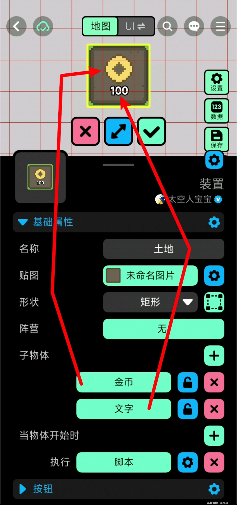
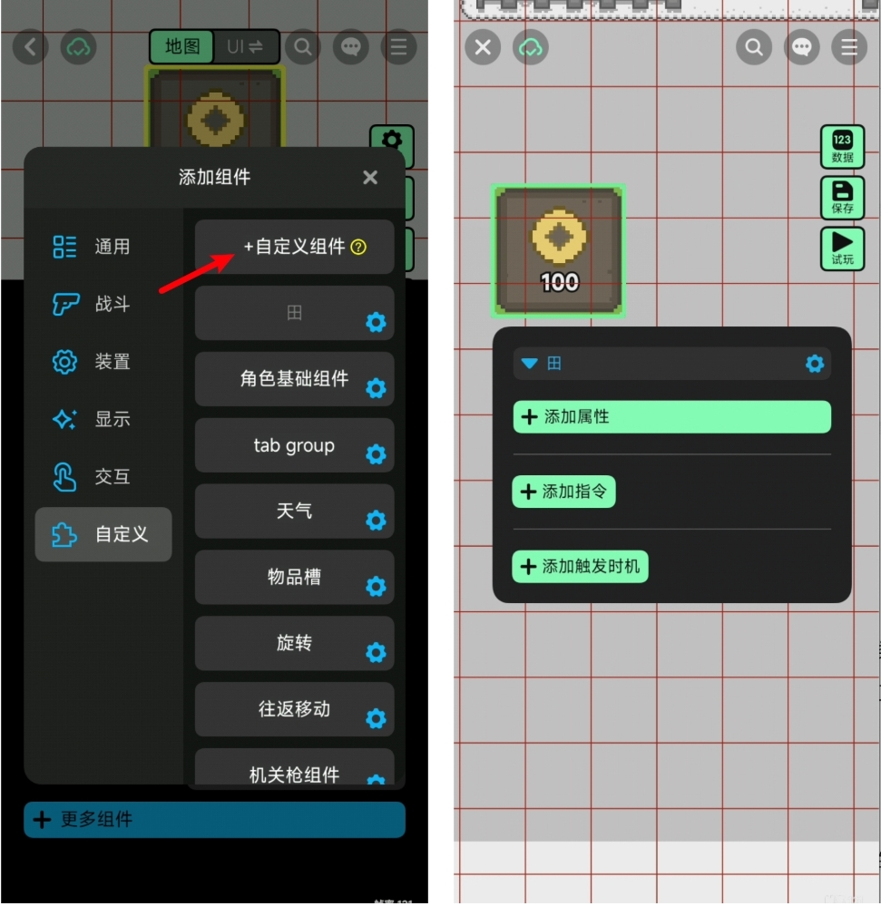
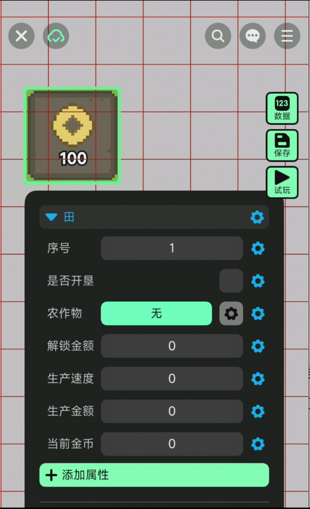
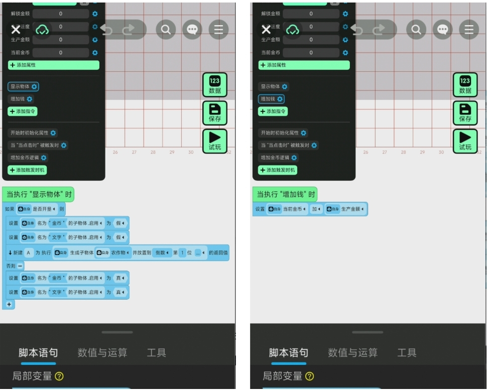
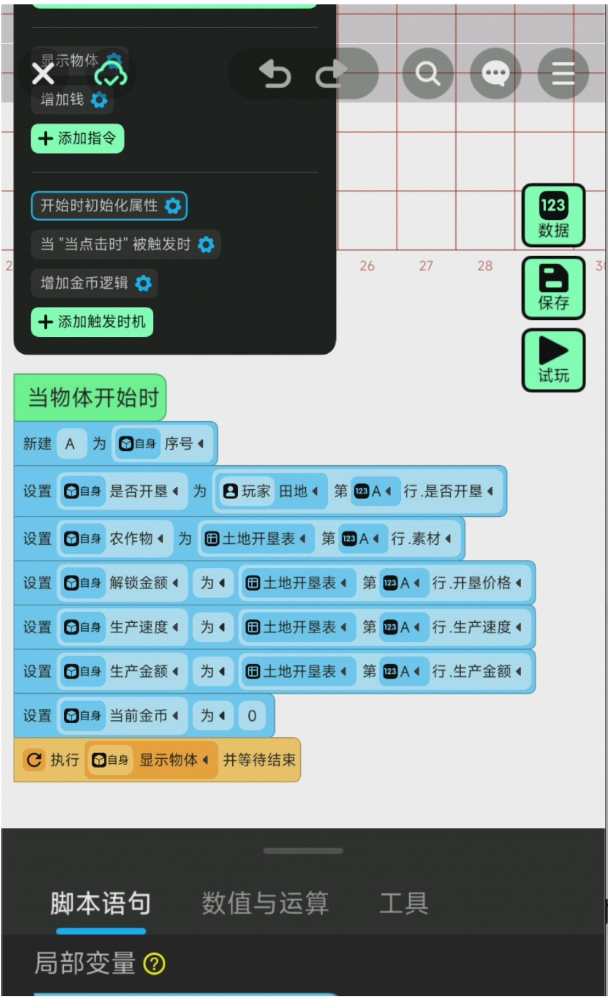
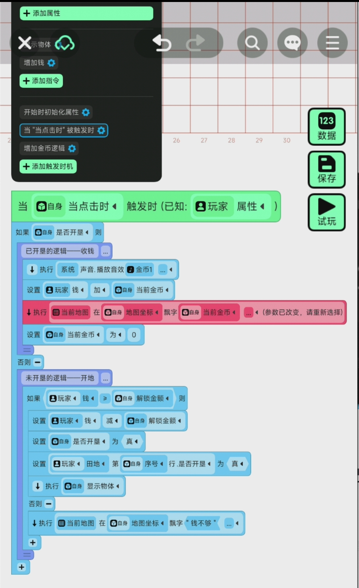
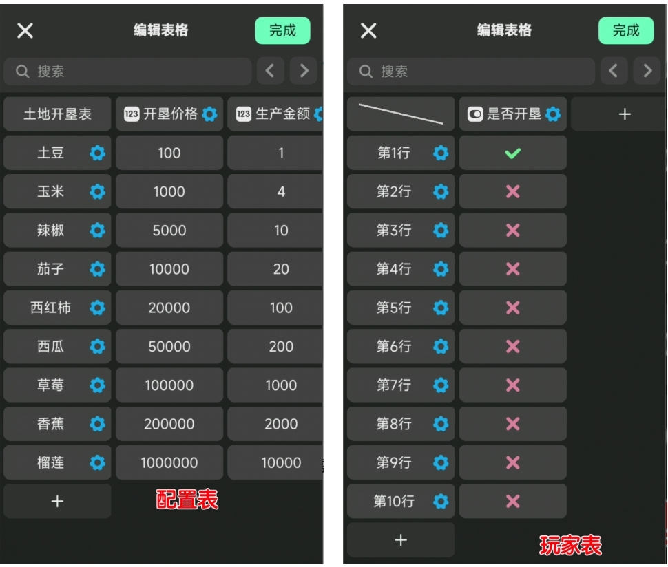

Basic: Custom components
1. What is a custom component?
📍 Custom components are components that creators write themselves, defining their own attributes, instructions, and behaviors when triggered.
2. What are the benefits of custom components?
The components provided by the official website are fixed, so the ability to record the state of an object and implement its functions is also limited.
If you have specific needs, such as in sandbox survival games where you need to create an interactive tree that records its current state (whether it's been cut down or not), regrowth time, and the number of pieces of wood that have fallen, you'll find that no single component can meet your requirements. That's when you need to customize it!
Custom components fully interpret a certain function assigned to an object. When we want another object to have the same function, we just need to attach this component to it as well.
For example, you might have created an interactive birch tree using a custom component, but you also need interactive pine and cypress trees. In this case, you can simply attach your custom component to other assets to reuse this functionality! Don't worry if you don't understand; this example will be implemented below.
This is quite convenient.
3. Contents of custom components
A custom component contains three parts: attributes, directives, and triggering events.
To make it easier to understand, we will analyze these three parts with a specific example.
I'm developing a farm-building game called "Farm Tycoon." The gameplay involves unlocking farmland, farming farmland to earn coins, players collecting coins, and then unlocking even more advanced farmland.
Alright! Now let's create a farm together!
📍 3.1 Preliminary Preparations
- A field: This field is a "device" type resource, containing a "button" component and two child objects.

📍 3.2 Attribute Section
Based on the functionality, we have determined that the following attributes are required!
- Farmland is numbered; you need to know which plot you own: This is a numeric type.
- Farmland has two states: before unlocking | after unlocking. This should be a true/false value.
- What do crops look like after farmland is unlocked: This should be a resource.
- The amount of money required to unlock farmland: This is a numeric variable.
- Gold production speed after farmland is unlocked: This is a numeric variable.
- The current amount of gold coins produced by this farmland: This is a numeric variable.

📍 3.3 Instruction Section
What kind of content is typically written as a command?
- This function will be called in many scripts. To avoid writing it many times, it can be written as a single command for direct invocation.
- This function has many steps and a long script. To maintain readability, it is extracted and written as a single instruction, which can be called directly to avoid writing a bunch of scripts.
In this example, I wrote two instructions.
- Display objects: Display the corresponding objects based on the current reclamation status.
- Add money: Add money based on production amount.

📍 3.4 Triggering Timing
Triggering events involves writing scripts based on existing events, such as when an object starts. In this example, we need to write three triggering event scripts.
When we first enter the game, we need to assign the values in the configuration table to the component properties and call the "Display Object" command to update the appearance of the field.

When clicked, if the land hasn't been cultivated yet, a cultivation check will be performed; if it has already been cultivated, payment will be collected directly.

If the fields have already been cultivated, then each time the production time is reached, the corresponding amount of gold coins will be produced. This is an infinite loop script.

📍 3.5 Appendix
The above example requires a configuration table to configure the basic data for each field; and a player table to record the cultivation status of each field.
